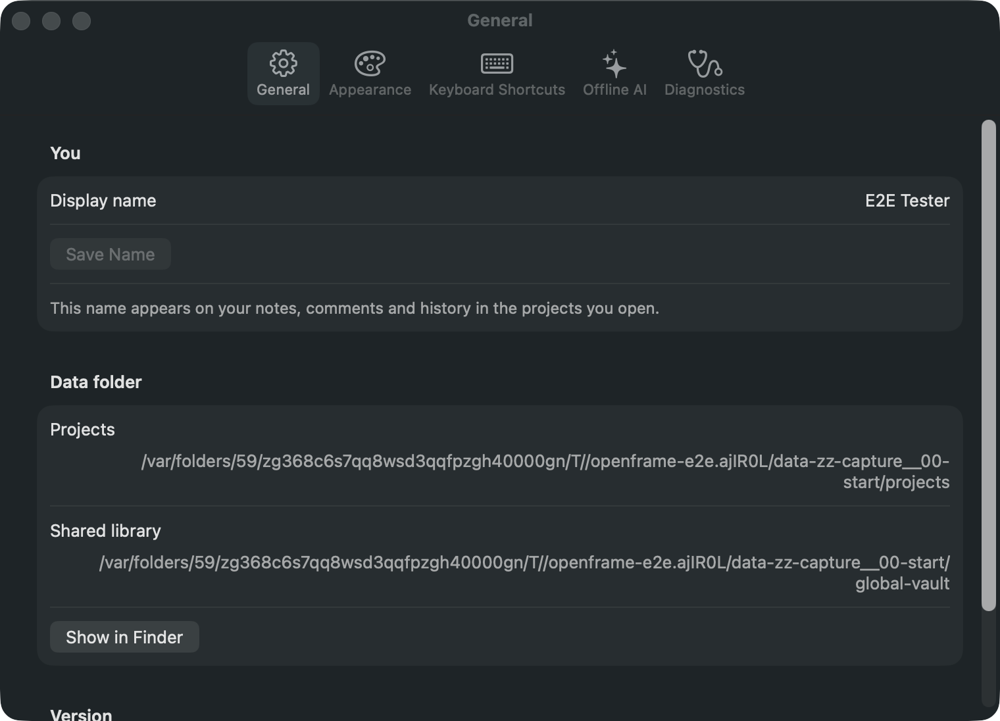

Settings · page 009 of 179 · window 760×548 pt · dark appearance (light version)
Reached from OpenFrame Studio menu by General. Controls on this screen:
Display name (textfield, settings-display-name)
Save Name (button, settings-save-name)
Show in Finder (button, settings-show-data)
General (button)
Appearance (button)
Keyboard Shortcuts (button)
Offline AI (button)
Diagnostics (button)

YouDisplay nameThis name appears on your notes, comments and history in the projects you open.Data folderProjects/var/folders/59/zg368c6s7qq8wsd3qqfpzgh40000gn/T//openframe-e2e.ajIR0L/data-zz-capture__00-start/projectsShared library/var/folders/59/zg368c6s7qq8wsd3qqfpzgh40000gn/T//openframe-e2e.ajIR0L/data-zz-capture__00-start/global-vaultVersionAppearanceGeneral